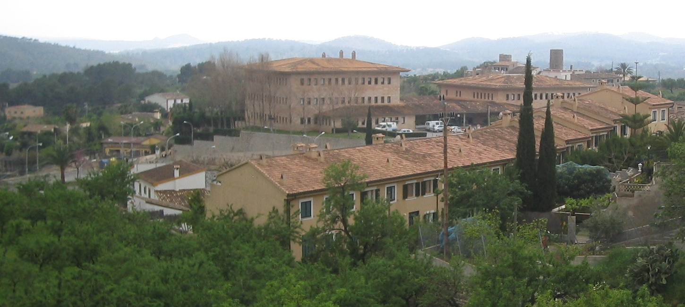
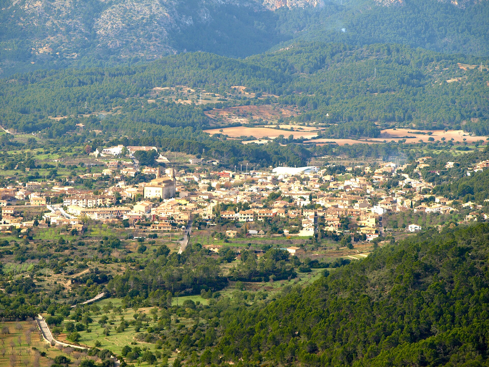
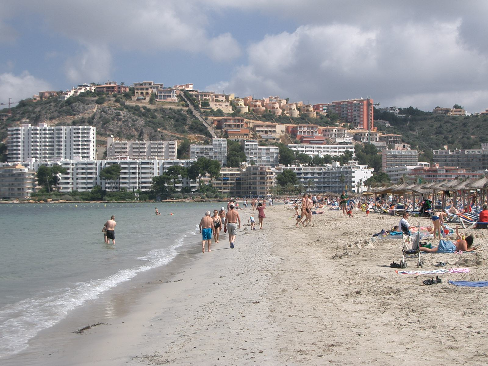
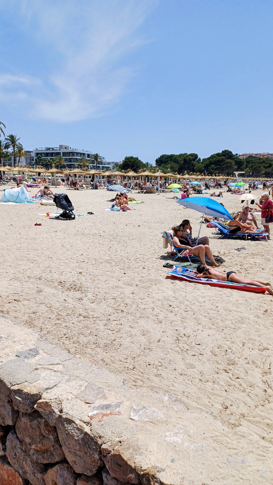
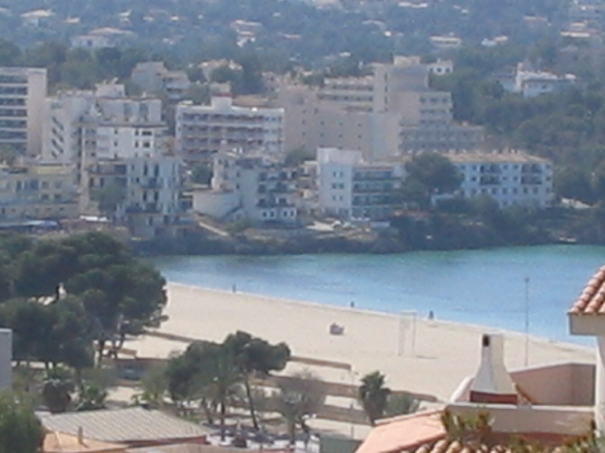
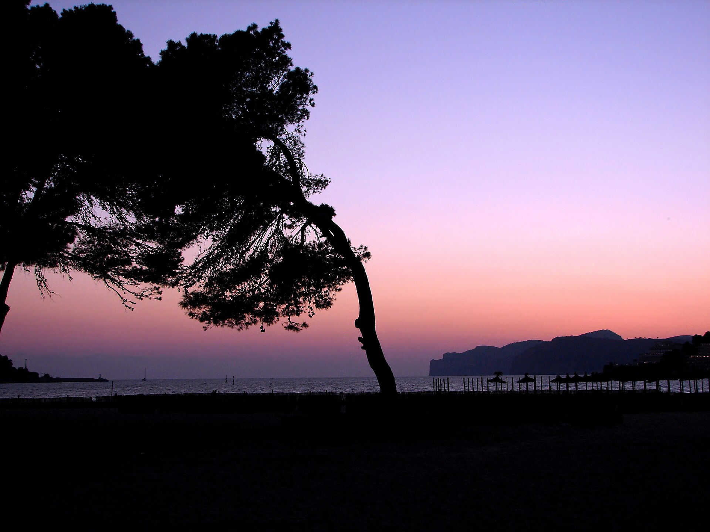
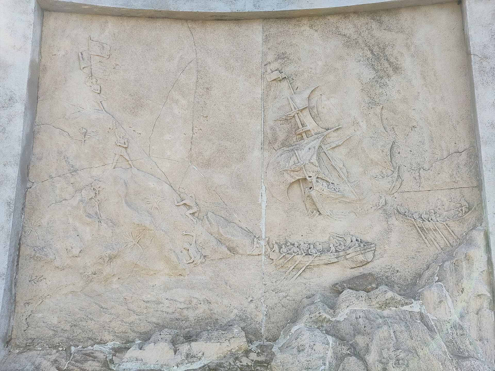
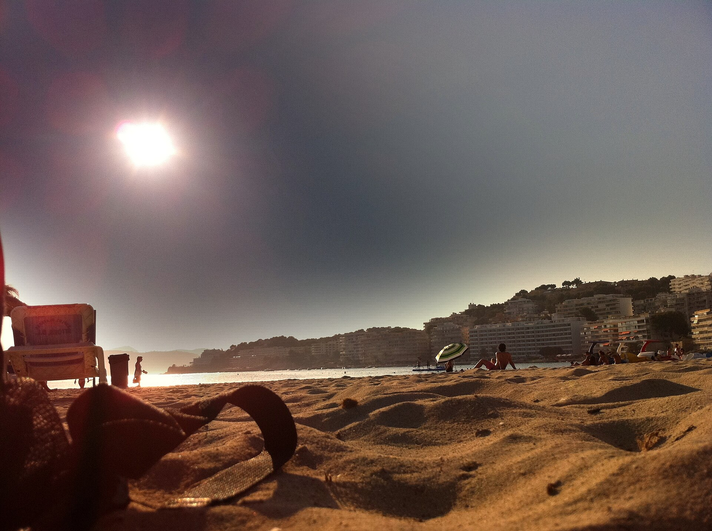
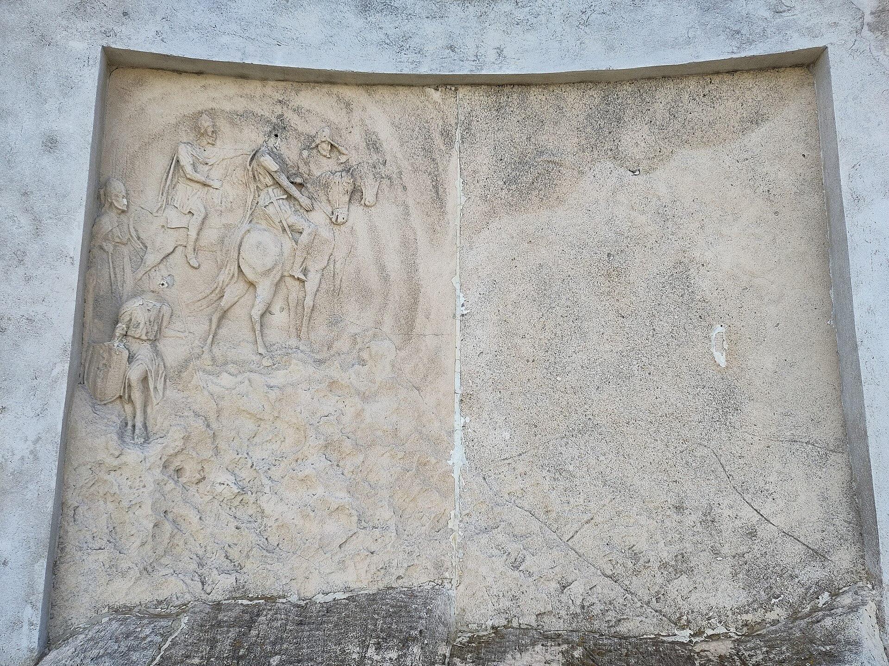
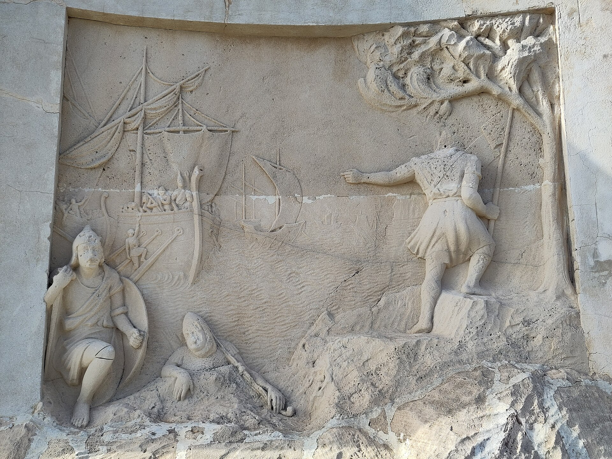

Muestra simulada de comunicación municipal: paisaje y patrimonio de Calvià y Santa Ponça. Montaje audiovisual de 60 segundos, con grafismos, rótulos bilingües, subtítulos y música original.
Las fotografías de archivo conservan sus autores y licencias. Selección, secuenciación, grafismo y montaje: Sami Halawa. Caso simulado elaborado con recursos de archivo; no constituye una cobertura presencial de los lugares.
Abrir o descargar el vídeo MP4 (H.264/AAC)
Las imágenes se muestran redimensionadas para su consulta. En el montaje se aplican encuadres, secuenciación y rótulos. Cada enlace abre el archivo fotográfico y cada fuente identifica su procedencia y condiciones originales.









